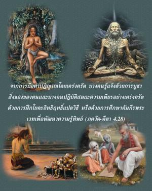
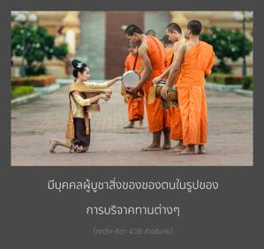
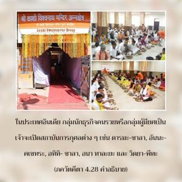
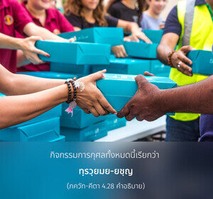
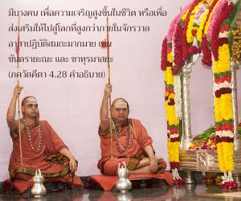
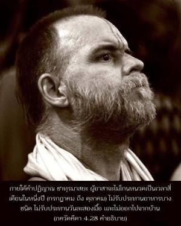

จากการถือคำปฏิญาณโดยเคร่งครัด บางคนรู้แจ้งด้วยการบูชาสิ่งของของตน และบางคนปฏิบัติสมถะความเพียรอย่างเคร่งครัดด้วยการฝึกโยคะอิทธิฤทธิ์แปดวิธี หรือด้วยการศึกษาคัมภีร์พระเวทเพื่อพัฒนาความรู้ทิพย์






การบูชาทั้งหมดนี้อาจจัดอยู่ในประเภทต่างๆกัน มีบุคคลผู้บูชาสิ่งของของตนในรูปของการบริจาคทานต่างๆในประเทศอินเดีย กลุ่มนักธุรกิจคนรวยหรือกลุ่มผู้มียศเป็นเจ้าจะเปิดสถาบันการกุศลต่างๆ เช่น ธรฺม-ศาลา, อนฺน-กฺเษตฺร, อติถิ-ศาลา, อนาถาลย และ วิทฺยา-ปีฐ ในประเทศต่างๆก็เช่นเดียวกันมีโรงพยาบาลบ้านผู้สูงอายุและมูลนิธิการกุศลแบบนี้มากมายที่แจกจ่ายอาหาร การศึกษา และรักษาโรคฟรีสำหรับคนจน กิจกรรมการกุศลทั้งหมดนี้เรียกว่า ทฺรวฺยมย-ยชฺญ มีบางคนอาสาปฏิบัติสมถะมากมายเพื่อความเจริญสูงขึ้นในชีวิต หรือเพื่อส่งเสริมให้ไปสู่โลกที่สูงกว่าภายในจักรวาล เช่น จนฺทฺรายณ และ จาตุรฺมาสฺย วิธีการเหล่านี้มีเงื่อนไขคำอธิฐานที่เคร่งครัดในการใช้ชีวิตภายใต้กฎเกณฑ์ที่เข้มงวดกวดขัน ตัวอย่างเช่น ภายใต้คำปฏิญาณ จาตุรฺมาสฺย ผู้อาสาจะไม่โกนหนวดเป็นเวลาสี่เดือนในหนึ่งปี (เดือนกรกฎาคมถึงเดือนตุลาคม) จะไม่รับประทานอาหารบางชนิด ไม่รับประทานวันละสองมื้อ และไม่ออกไปจากบ้าน การถวายบูชาความสะดวกสบายของชีวิตเช่นนี้เรียกว่า ตโปมย-ยชฺญ ยังมีบางคนปฏิบัติโยคะ การเข้าฌานต่างๆ เช่น ระบบ ปตญฺชลิ (เพื่อกลืนเข้าไปในความเป็นอยู่แห่งสัจธรรม) หรือ หฐ-โยค หรือ อษฺฏางฺค-โยค (เพื่อความสมบูรณ์บางอย่างโดยเฉพาะ) และบางคนเดินทางไปตามสถานที่ทางศักดิ์สิทธิ์ต่างๆของนักบุญ การปฏิบัติทั้งหมดนี้เรียกว่า โยค-ยชฺญ ถวายการบูชาเพื่อความสมบูรณ์บางประการในโลกวัตถุ มีบางคนศึกษาวรรณกรรมพระเวทต่างๆโดยเฉพาะ เช่น อุปนิษทฺ และ เวทานฺต-สูตฺร หรือปรัชญา สางฺขฺย ทั้งหมดนี้เรียกว่า สฺวาธฺยาย-ยชฺญ หรือปฏิบัติตนถวายบูชาด้วยการศึกษาโยคะ ทั้งหมดนี้ปฏิบัติด้วยความศรัทธาในการถวายการบูชาต่างๆและค้นหาสภาวะชีวิตที่สูงกว่า อย่างไรก็ดีกฺฤษฺณจิตสำนึกแตกต่างจากสิ่งเหล่านี้เพราะว่าเป็นการรับใช้องค์ภควานฺโดยตรง เราไม่สามารถบรรลุถึงกฺฤษฺณจิตสำนึกได้ด้วยการถวายบูชาวิธีหนึ่งวิธีใดดังที่ได้กล่าวมาข้างต้นนี้ แต่เราสามารถบรรลุได้โดยพระเมตตาธิคุณขององค์ภควานฺและสาวกผู้เชื่อถือได้ของพระองค์เท่านั้น ดังนั้นกฺฤษฺณจิตสำนึกจึงเป็นทิพย์